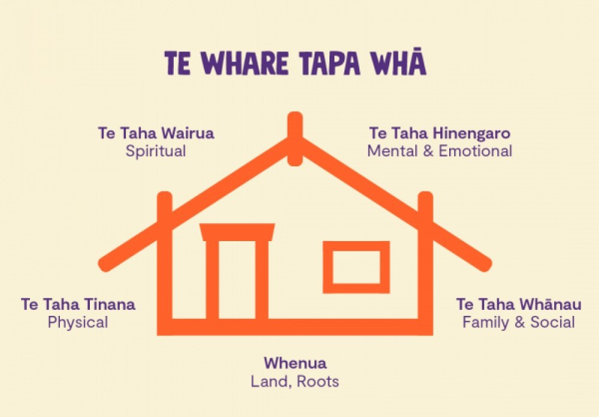

Te Whare Tapa Whā
Updated: 4th June 2025
Te Whare Tapa Whā, developed by Tā Mason Durie in 1984, is a wellbeing plan created to provide a Māori perspective on health. The plan is made up of a land and four walls, which is the foundation of the health plan.
Wellbeing Plan |
|
|---|---|
| Walls | Activities |
| Taha Tinana |
|
| Taha Hinengaro |
|
| Taha Wairua |
|
| Taha Whānau |
|